<!-- Add icon library -->
<link rel="stylesheet" href="https://cdnjs.cloudflare.com/ajax/libs/font-awesome/4.7.0/css/font-awesome.min.css">

<mat-sidenav-container class="sidenav-container">
  <mat-sidenav #drawer class="sidenav" fixedInViewport
      [attr.role]="(isHandset$ | async) ? 'dialog' : 'navigation'"
      [mode]="(isHandset$ | async) ? 'over' : 'side'"
      [opened]="(isHandset$ | async) === false">
    <div class="logo-container">
      <mat-toolbar class="logo">Twitch</mat-toolbar>
      <mat-toolbar class="logo-last">Fighter</mat-toolbar>
    </div>
    <mat-nav-list>
      <a class="icon-row" mat-list-item href="/home">
        
        Dojo
      </a>
      <a class="icon-row" mat-list-item href="/streams">
        
        Streams
      </a>
      <a class="icon-row" mat-list-item href="/leaderboard">
        
        Leaderboard
      </a>
      <a class="icon-row" mat-list-item href="/store">
        
        Swag
      </a>
    </mat-nav-list>
    <div class="follow">
      Follow us around the web!
    </div>
    <div class="social-containers">
      <a href="https://www.twitch.tv/directory/game/Street%20Fighter%20V" class="fa fa-twitch"></a>
      <a href="https://twitter.com/StreetFighter" class="fa fa-twitter"></a>
    </div>
    <div class="social-containers">
      <a href="https://www.youtube.com/channel/UCVg9nCmmfIyP4QcGOnZZ9Qg" class="fa fa-youtube"></a>
      <a href="https://www.instagram.com/streetfightergame/?hl=en" class="fa fa-instagram"></a>
    </div>
    <div class="social-containers">
      <a href="https://www.reddit.com/r/StreetFighter/" class="fa fa-reddit"></a>
      <a href="https://www.facebook.com/streetfighter/" class="fa fa-facebook"></a>
    </div>
      
  </mat-sidenav>
  <mat-sidenav-content>
    <mat-toolbar color="primary">
      <button
        type="button"
        aria-label="Toggle sidenav"
        mat-icon-button
        (click)="drawer.toggle()"
        *ngIf="isHandset$ | async">
        <mat-icon aria-label="Side nav toggle icon">menu</mat-icon>
      </button>
      <div class="tickerwrap">
        <div class="ticker">
          W e l c o m e &nbsp; t o &nbsp; T w i t c h &nbsp; F i g h t e r !&nbsp;&nbsp;&nbsp;&nbsp;&nbsp;&nbsp;&nbsp;N o t &nbsp; A l l &nbsp; S t r e a m s &nbsp; A r e &nbsp; C r e a t e d &nbsp; E q u a l ! &nbsp; P r e p a r e &nbsp; T o &nbsp; F i g h t . . .
        </div>
      </div>
    </mat-toolbar>
    <!-- Add Content Here -->
    <router-outlet class="main-component"></router-outlet>
  </mat-sidenav-content>
</mat-sidenav-container>
